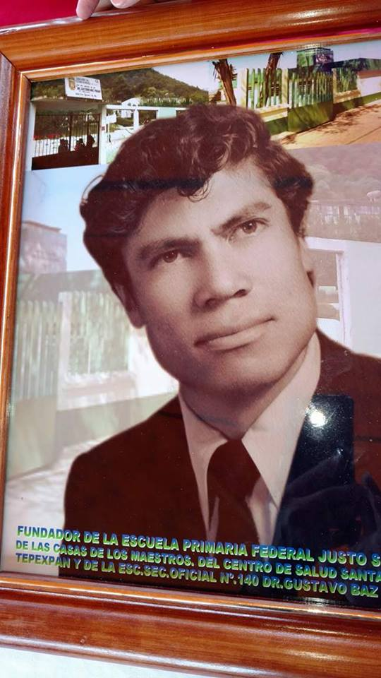

Ese hombre fue el sacerdote Víctor Sánchez Sánchez, originario de Almoloya de Alquisiras,
quien llegó Santa Cruz a finales de la década de 1960. Un sacerdote que siguiendo los preceptos de la teología de la liberación,
influyó más allá del templo, involucrándose directamente en las obras materiales que se realizaban, y promoviendo otras más.
Era común encontrarlo con botas de trabajo, con un pantalón de mezclilla, trabajando codo a codo con los vecinos en el colado de una escuela,
en la construcción de una brecha o reforestando el cerro de Santa Cruz.
También haciendo gestión para obtener ayuda para concluir las obras emprendidas.Y tambien aporto su apoyo al Centro de Salud de Santa CRuz Tepexpan el cual se encuentran a un lado de la iglesia y la escula Justo Sierra.
Siempre hablaba con la verdad, con honestidad; con energía condenaba la corrupción y a los que en ella incurrían.
Su recuerdo queda en la memoria de la comunidad, por ello la convocatoria para hacerle este Homenaje , contó con la aprobación de todos.
El Homenaje se llevó a cabo el viernes 7 de julio. Como dijo uno de los asistentes “ya se habían tardado en hacerle el reconocimiento al padre Víctor”.
Enlace

Haz clic en el botón para regresar a la página anterior.